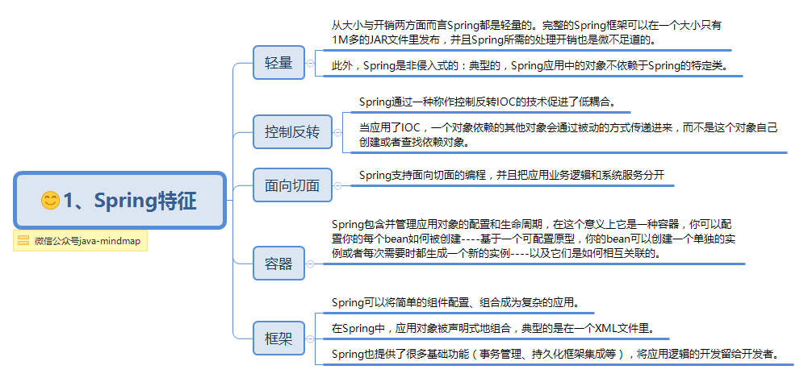

摘要: Spring是一个开源框架，是为了解决企业应用程序开发复杂性而创建的。框架的主要优势之一就是其分层架构，分层架构允许您选择使用哪一个组件，同时为 J2EE 应用程序开发提供集成的框架
写在前面
很多人在微信公众号中给我留言说想看spring的思维导图，正好也打算写。与其他框架相比，spring项目拥有更多的模块，我们常用的ioc，mvc，aop等，这些是spring的主要板块。一篇文章也不可能全部都讲，所以，我打算先把spring简介说一下，后续再写ioc，mvc和aop。
关于Spring
Spring是一个开源框架，是为了解决企业应用程序开发复杂性而创建的。框架的主要优势之一就是其分层架构，分层架构允许您选择使用哪一个组件，同时为 J2EE 应用程序开发提供集成的框架。
它是一个全面的、企业应用开发一站式的解决方案，贯穿表现层、业务层、持久层。但是Spring仍然可以和其他的框架无缝整合。

Sping架构
Spring框架是分模块存在，除了最核心的Spring Core Container(即Spring容器)是必要模块之外，其他模块都是可选，视需要而定。大约有20多个模块。


Spring3与Spring4是有区别的，4.0主要是对Java 8的新函数式语法进行支持，还有加强了对网络各种新技术比如http-streaming, websocket的更好的支持。
一般来说，Spring主要分为7个模块：


Spring的主要jar包

常用注解
bean注入与装配的的方式有很多种，可以通过xml，getset方式，构造函数或者注解等。简单易用的方式就是使用Spring的注解了，Spring提供了大量的注解方式，让项目阅读和开发起来更加方便。


第三方框架集成
Spring框架的开发不是为了替代现有的优秀第三方框架，而是通过集成的方式把它们都连接起来。下面总结了一些常集成的优秀框架。

最后
这一节简单介绍了Spring，没涉及到原理的东西。Spring如此博大精深，希望大家好好学习哈。